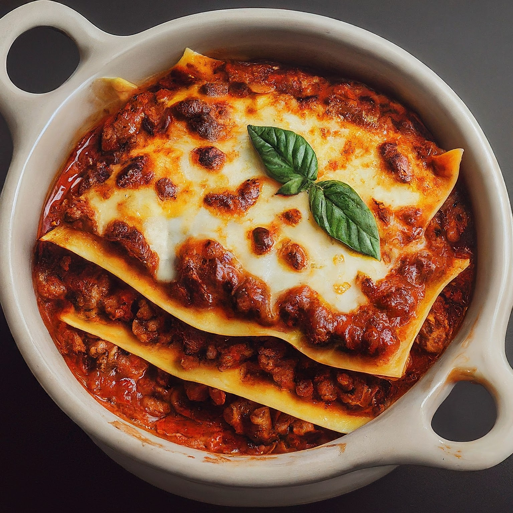

Delicious Lasagna
Ingredients:
- 1 pound (450g) ground beef
- 1 onion, chopped
- 3 cloves of garlic, minced
- 1 can (14 oz) diced tomatoes
- 1 can (14 oz) tomato sauce
- 2 cups chicken or beef broth
- 8 oz lasagna noodles, broken into pieces
- 1 teaspoon dried basil
- 1 teaspoon dried oregano
- 1/2 teaspoon salt
- 1/4 teaspoon black pepper
- 1 cup shredded mozzarella cheese
- 1/2 cup grated Parmesan cheese
- Fresh basil leaves for garnish (optional)
Instructions:
1. In a large pot or deep skillet, brown the ground beef over medium-high heat until no longer pink. Drain excess fat if needed.
2. Add the chopped onion and minced garlic to the pot and cook for a few minutes until the onion is translucent.
3. Stir in the diced tomatoes, tomato sauce, chicken or beef broth, broken lasagna noodles, dried basil, dried oregano, salt, and black pepper. Bring the mixture to a boil.
4. Reduce the heat to low and cover the pot. Let the lasagna simmer for about 20-25 minutes, or until the noodles are tender, stirring occasionally.
5. Once the noodles are cooked, stir in half of the shredded mozzarella cheese and half of the grated Parmesan cheese until melted and well combined.
6. Sprinkle the remaining cheese on top of the lasagna. Cover the pot and let it sit for a few minutes to allow the cheese to melt.
7. Garnish with fresh basil leaves if desired before serving.
8. Serve hot and enjoy your delicious one-pot lasagna!